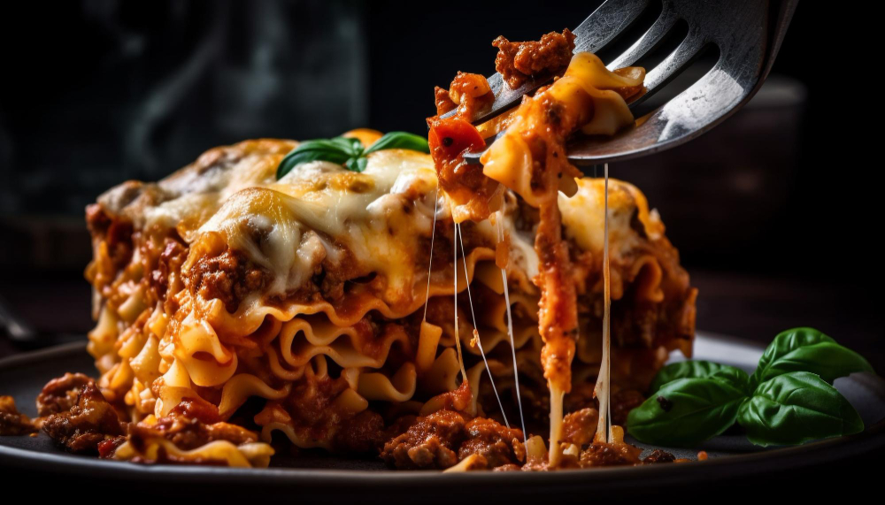

Lasagna recipe
Description
This classic lasagna recipe is just what a cold winter day needs. It will warm your family right up!
Thick, wide lasagna noodles separates each layer and adds that soft buttery taste to the lasagna recipe.
Ingredients
- Olive oil: used for cooking the ground beef.
- Ground beef: sauté in a pan over medium heat until it is cooked through.
- Italian sausage: sautéed with ground beef for more meat and flavor
- Tomato paste: gives it more thickness and rich tomato taste.
Steps
- Add an egg to your ricotta cheese and parmesan mixture. This will help it create a rich sauce that spreads evenly
- Whole milk ricotta and mozzarella cheese is best for flavor and richness. If you need to make this low-fat try using skim versions of these cheeses.
- If you do not have the mixture of tomato paste and sauce try using Mariana sauce.
- This lasagna recipe can be made into a slow cooker if you would like. Simply follow the recipe until layering in the pan.